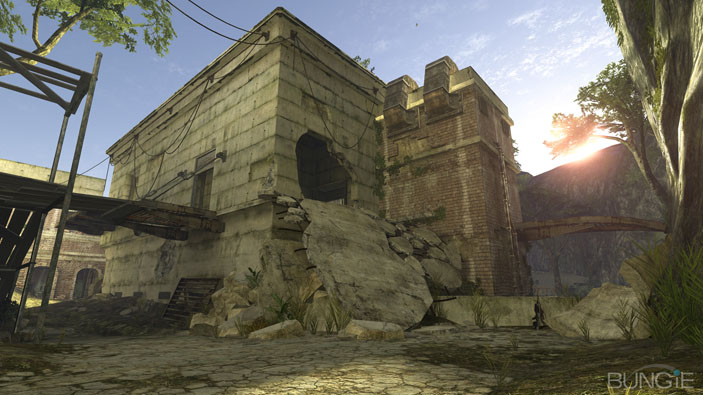
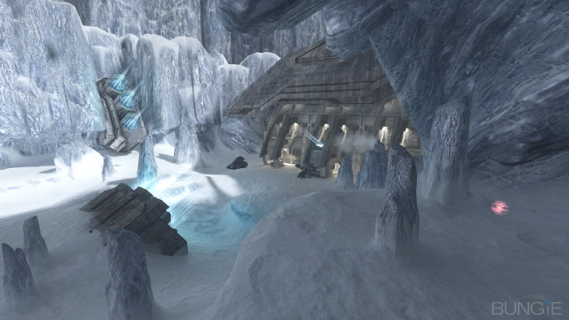
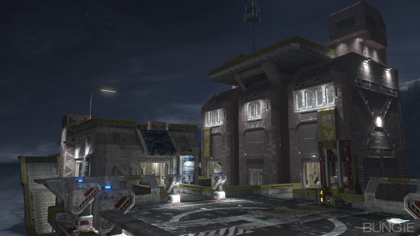

This is Bungie Studios' answer to the masses, after the giant success of the Heroic Map Pack, they didn't just make one new map, but took 2 old ones and reinvented them to perfection as well. If you wish to watch the ViDoc about it, click this link. Each of these maps comes with a whole host of new stuff in Forge, so that doubles the amount of fun to be had.
Map 1: Ghost Town
Ghost Town is the new map of the trio based on the outskirts of Voi in the Campaign mission Tsavo Highway. There was a campaign to provide the world with water, so you will see the odd pallet of barrels here and there. Each side spawns near a power weapon, one being the Rocket Launcher, the other being the Shotgun, providing a balance, yet neither side of the map is the same, ever.

Map 2: Avalanche
Avalanche is a remake of the Halo: Combat Evolved multiplayer map Sidewinder, I remember this large classic well, with it's Sniper/Shotgun locations right next to each other, literally. I'm sure Bungie swapped those so they aren't next to each other anymore. Also check the size of the Man Cannons here.

Map 3: Blackout
Lockout in Halo 2 makes a proud return in the form of Blackout, and it's been improved in many ways. Why would an oil rig be halfway up an icy mountain? So they put it in an icy ocean, much better located. Each feature sits right where it originally was, spare a jump or two. Meaning those familiar with Lockout should have no problems kicking ass here.

So who isn't hyped for this? It costs 800Gp and there are no discussions of it being free in the future, so I'd not just recommend buying this, but also grabbing a free download of the Heroic maps Standoff, Foundry and Rat's Nest now, as most XBL Playlists require them nowadays.